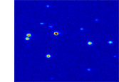

DNA & PROTEIN ANALYSIS GRAPHENE GRAPHENE NANOPORES NANOPARTICLE SYNTHESIS FLUORESCENCE NANOFABRICATION NANOELECTRONICS FORCE MICROSCOPY EQUIPMENT
Introduction
Single Nanorod Blinking Statistics
Nanorod Cluster Blinking Statistics
References

Under continuous illumination, many molecular and nanoscale systems have been observed
to emit light intermittently. Examples include molecules, fluorescent green protein, single light harvesting
complexes, single organic fluorophores and, most recently, individual quantum dots and quantum wires.
This light intermittency is often called "blinking".
In many nanoscale systems the observed fluorescence intermittency does not follow predictions
of Niel Bohr's quantum jumps between discrete energy levels of individual atoms and molecules. Specifically, the
fluorescence intensity time trace of individual nanocrystal quantum dots follows a peculiar Levy statistics.
Elongated core-shell CdSe-based nanocrystals (nanorods, NR) are particularly interesting as fluorescent
markers because of their large absorption cross-section, large surface area and high brightness.
Single Nanorod Blinking Statistics
We show fluorescence blinking statistics measured from single CdSe nanorods of different sizes
and fluorescence correlated with transmission electron microscopy (TEM) for direct determination of the number of nanorods.
We find that the on-time probability distributions of nanorods are best described by a truncated power law. At fixed
excitation intensity, the truncation time, increases approximately linearly with increasing NR aspect ratio; for a given
sample, it increases gradually with increasing excitation intensity. Also, for clusters with up to 15 nanorods, the truncation
time was found to increase super linearly with the number of particles.


Fluorescence micrograph (45 × 45 μm2) of a silicon nitride (Si3N4) membrane with patterned gold markers. Transmission electron
micrograph (TEM) of the same region on the substrate.


Off- and on-time probability density from one single nanorod.

Fluorescence intensities vs. time in order of increasing number of nanorods, N.
Histograms of the truncation time for 24 individual nanorods and 10 additional blinking
sources that correspond to NR clusters consisting of up to 15 nanorods. Inset: truncation time vs. N on a
log10-log10 scale.
Nanorod Cluster Blinking Statistics
We also studied the fluorescence properties of core-shell CdSe-based nanorod clusters. The time-dependent
cluster fluorescence was correlated with the particle number by direct particle counting (from single nanoparticles to ~10000),
cluster area and the orientation and distribution of individual nanorods within these clusters.
Cluster TEM images and fluorescence traces.

Mean fluorescence intensity vs. number of NRs for different clusters.

Fluorescence intensities vs. time from clusters with N=50, 95 and up to ~1500.
Fluorescence intensity vs. time on a log10-log10 scale for a) NR clusters
containing ~10000 NRs (NR1, orange curve) and ~50000 NRs (NR2-NR4), as well as large clusters of b) spherical nanocrystals
(NC1, NC2). The insets show fluorescence intensity vs. time on a linear scale for NR3 and NC1, respectively. The NR samples were
irradiated continuously over a period of 18.6 hours. The laser beam intensity profile is well approximated by a Gaussian,
with 100 W/cm2 peak intensity. The field of view shown is ~75 × 75 μm2; the color scale bar indicates
the intensity values.
We carry out this research in collaboration with
Prof. Catherine Crouch from Swarthmore College, Pennsylvania.
For more details on our recent results on CdSe-based spherical and elongated nanocrystals (nanorods) see:
Catherine H. Crouch, Robert Mohr#, Thomas Emmons#, Siying Wang, Marija Drndic
"Excitation energy dependence of fluorescence intermittency in CdSe/ZnS core-shell nanocrystals"
Journal of Physical Chemistry C, 113 (28), 12059-12066, 2009.
Siying Wang, Claudia Querner, Michael D. Fischbein, Lauren Willis, Dmitry Novikov, Catherine Crouch and Marija Drndic
"Blinking statistics correlated with nanoparticle number"
Nano Letters 8 (11), 4020-4026, 2008.
Supporting Infomation
Claudia Querner, Siying Wang, Ken Healy, Jessamyn Fairfield, Michael D. Fischbein and Marija Drndic
"Fluorescence dynamics of semiconductor nanorod clusters studied by correlated atomic-force, transmission-electron and fluorescence microscopy"
Journal of Physical Chemistry C 112 (50), 19945-19956, 2008.
Supporting Information
Siying Wang, Claudia Querner, Thomas Emmons#, Marija Drndic, and Catherine H. Crouch
"Fluorescence blinking statistics from CdSe core and core-shell nanorods"
J. Phys. Chem. B 110 (46), 23221-23227, 2006.
Supporting Information
cond-mat/0603331
2010, Marija Drndic